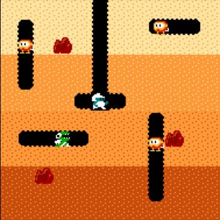
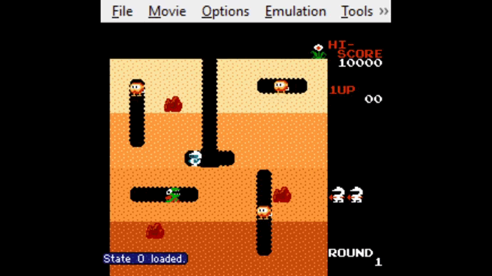

Hey, welcome back. Hopefully you’ve read the previous part of this wonderful mini-series, which was all about initial theorical stuff and pseudo-planning. So now, get ready for a more technical post, where we’ll be developing our DigDuQ environment! I’ll be writting this following my experience, so sorry if the pacing seems a little off.
Setting the Gym up
At first, I was wondering how people develop environments for reinforcement learning, and searching for a lil’ bit I found out about OpenAI’s Gym, which they advertise as “a toolkit for developing and comparing reinforcement learning algorithms. It supports teaching agents everything from walking to playing games like Pong or Pinball.” Which is exactly what we need for what we’re doing!
Luckily, creating a new environment isn’t very hard. Following the docs, we set up our initial files and get started right away writing DigDuQ’s environment. First, we create a new class derived from gym.Env, and set it up the following (admittedly barebones) way:
1
2
3
4
5
6
7
8
9
10
11
class DigdugEnv(gym.Env):
def __init__(self):
pass
def reset(self):
pass
def step(self, action):
pass
def render(self, mode="human"):
pass
def close(self):
pass
Now what does all of this mean? Excellent question, let have a little discussion on what’s the deal with these functions.
__init__(): Here we will declare whatever variables we need and also what Gym calls the action and observation space. We’ll talk more about those later on, but consider them as the definition of the number of actions you can do within the environment and how its state is represented, respectively.reset(): We need some way to start the environment in a clean state, for example in case we get a game over. This function will handle everything so that training can be done continuously even if the env stops for some reason or the other.step(action): This one’s a bit more interesting than the last two. In this function, we need to define how to pass a given action to the environment, and from it extract an observation, the reward gained from the action, and whether the simulation is done or not.render(mode): This is used if you need some way to render your simulation to the screen, in case you run it from inside the class. As you’ll see later, I’m not writting an emulator from scratch, so we’ll not be using this function.close(): When ending the simulation, if we need to clean anything up, we’ll call this function. As simple as it gets.
Now that we have a clearer picture as to what we need to write in order to get a gym for our agent going, so it’s time to get to the nitty and gritty. First of all, how are we getting the game to actually run and have it pass information into our system?
Time to Dig
Finally it’s time to actually start thinking. After some research, I decided to use the NES version of Dig Dig for our little gym. A decision partially motivated by laziness, but it’ll help us later on. For this, we’ll use the FCEUX emulator, which actually supports Lua for scripting, a feature that will be useful for getting some information about the state of the game easily. Now that we know where to run the game, it’s time to think about how to pass actions, how to get observations, rewards, and the “done” state (AKA are we dead yet?).
Observations
 I’m going to base many assumptions on the investigation presented in DeepMind’s Deep Reinforcement Learning paper, in which they trained agents to play Atari games. One of these hypotheses is that agents can learn just with video data, and as such, observations can very well just be the video component of the game. Also, I’m going to assume that the agent can understand what’s going on with just a grayscale picture. With this, we will define our observation space as a box of 190x190 pixels to encompass just the game square, which comes at just a little less total pixels than the 210x160 canvas of DeepMind, and using only one color instead of 3. Let’s do our instantation of the observation space then:
1
2
3
4
def __init__(self):
self.observation_space = spaces.Box(low=np.zeros((190, 190)),
high=np.ones((190, 190)),
dtype=np.float16)
Finally some action! Here we define our space as a box of 190x190, where each value can be a floating point number (as in, decimal) between zero and one, nice! Now, getting the image will be a bit of a hassle. This is the part where I’m probably gonna start getting death threats sent to my email, but I’m actually doing this on Windows, because my Linux machine is nowhere near as powerful as what you need for a machine learning task. Now that that’s out of the way, the method I used to get the pixel info was Python’s PIL library’s ImageGrab() function, where we can pass a set of coordinates and it’ll get the pixels in that place. We get the coordinates from win32gui, and also the window handle, which will be useful for input later on. If you’re interested on the actual implementation, check out the project’s GitHub repo, it’s on the gym-digdug/gym_digdug/envs/digdug_env.py file.
Actions
Alright, we have a way of seeing what’s happening on the screen, now time to interact with it! For Dig-Dug, the number of actions is actually somewhat small, we can move either up, down, left or right, or we can launch our trusty bike pump forward to destroy the enemies on the level. That’s a total of 5 possible actions, which means that our action space is a discrete vector of size 5, which we will promptly insert into our __init__ function:
1
2
3
4
5
6
7
def __init__(self):
self.observation_space = spaces.Box(low=np.zeros((190, 190)),
high=np.ones((190, 190)),
dtype=np.float16)
self.action_space = spaces.Discrete(5)
self.action_map = {0: Key.up, 1: Key.down, 2: Key.left, 3: Key.right, 4: 'f'}
With this, we are just saying that we have 5 possible actions to choose from. You may also notice a cheeky little line at the bottom, that’s where I defined what our actions really are. Gym’s action_space actually just defines a list of numbers from 0 to whatever number we said, so the way I chose to map those numbers to actual inputs is with that dictionary. For passing those inputs to the emulator, I’m using pynput to control the keyboard from the Python script. The emulator bindings are arrows for the direction pad, f for the A button, p for loading a save state, and k to advance to the next frame as long as it’s being pressed. You’ll know what we need those latter two buttons after a bit.
Rewards
This is an interesting part. I’ve said the word “reward” a couple of times before, but I think I haven’t actually defined what rewards are, and that’s cause rewards will vary depending on the environment. In general, rewards are a quantifiable way of knowing how are well are we doing in our space, which doesn’t actually say a lot, so let’s try to establish what our rewards are for Dig-Dug. I say try because that’s actually not as simple as it sounds in my opinion.
At first glance, we could say that our reward is our score. I mean, traditionally with these games the higher the score the better we are doing right? And that’s still true for Dig-Dug, however, the game’s objective is not necessarily getting a high score, it’s to kill the monsters in the level (or letting them escape). You could argue that, considering that killing enemies gives a lot of points when compared to just digging, score could still be a nice reward quantifier, but DeepMind stated that their approach couldn’t differentiate between rewards of different magnitude, and for that reason they just set positive rewards as 1, negative rewards as -1, and no changes as 0. Of course, a paper from 2013 might be somewhat outdated, so we’re not gonna let that deter us. As such, I propose trying two ways of setting up our rewards, using our game score (without capping the rewards like DeepMind did), and using the remaining number of enemies as the other, which means that a positive reward is given when there are less enemies on the screen.
Enough theory crafting, how do we get that info in our environment? Here’s where being able to script in FCEUX comes in handy. After digging a bit with the RAM Search function, I found the addresses where the score, number of remaining enemies, and lives are stored in the NES’s memory, and created a pipe to communicate between Lua and Python to transmit information from the emulator into our cozy space. This is way easier said than done, especially considering I’ve never used pipes in Windows before, and last time I used them at all was like 3 years ago. Regardless, the implementation is available for you all to see the duct-taped solution I managed to come up with. I won’t really delve further into it here because this section is already getting long and I have no cutesy things to add to it, but if you read the repository and need some help understanding what I did feel free to reach out.
Step by Step
Let’s discuss what we’re gonna do for our step() and reset() functions. First, for resetting, we need to restart the number of lives we have and score points as 3 and 0, respectively (that’s what the game starts with, after all). After that, we’ll be focusing the FCEUX Windows with the help of our handy win32gui library, and telling the emulator to load a previously created save state in the initial frame of the first level in Dig-Dug by sending a p keypress. After that, we grab an image of our stage, and make the function return it for our agent.
Now, for stepping in our environment, first we need to make sure our action is a valid one (after all, we have no way of knowing what a number 3.5 or 523 means as an action in our context). After that, we press k to start advancing frames, while at the same time sending the keypress mapped to the action we received. That means for example if we got a 2, we’ll be sending a left arrow key press to the emulator. While these two buttons are being pressed, we will wait for the Lua script to send us the information we said before, meaning our lives, remaining enemies and current score. This will happen after 30 in-game frames (a somewhat arbitrary number, I know), after which we release both keys and stop the emulation, and grab our screenshot of what’s the state of our game right now. Finally, we check if we’re still alive and set that as our done flag. What we return then is the grayscale picture of our current state, our reward (which is defined as either the difference between our last step’s score and the current one or the difference of remaining enemies between the last and current step depending on our settings), and whether we’re still alive or not with our done flag.
It’s time to start getting it all together. I’m not going to paste the whole code here because it’s full of stuff that’s not really needed to understand what’s happening, but let’s fill up our initial DigdugEnv class with pseudocode mixed with Python using what we have discussed here:
1
2
3
4
5
6
7
8
9
10
11
12
13
14
15
16
17
18
19
20
21
22
23
24
25
26
27
28
29
30
31
32
33
34
35
36
37
38
39
40
41
42
43
44
45
46
47
48
class DigdugEnv(gym.Env):
def __init__(self):
observation_space = spaces.Box(low=np.zeros((190, 190)),
high=np.ones((190, 190)),
dtype=np.float16)
action_space = spaces.Discrete(5)
action_map = {0: Key.up, 1: Key.down, 2: Key.left, 3: Key.right, 4: 'f'}
lives = 3
score = 0
enemies = 0
reward_type = 'score'
pipe = win32pipe.CreateNamedPipe(...)
def reset(self):
lives = 3
score = 0
enemies = 0
keyboard.press('p') # Load savestate
obs = ImageGrab.grab() # Take screenshot
return obs
def step(self, action):
if action not in action_space:
return
action = action_map[action] # Set action as our defined input
keyboard.press('k') # Advance frame
keyboard.press(action)
data = pipe.GetData()
keyboard.release('k') # Stop advancing frames
keyboard.release(action)
obs = ImageGrab.grab()
if reward_type == 'score':
reward = data.score - score
else:
reward = enemies - data.enemies
lives = data.lives
score = data.score
enemies = data.enemies
if data.lives < 0:
done = True
return obs, reward, done, []
def render(self, mode="human"):
pass # Considering the emulator renders for us, we don't need to fill this up
def close(self):
keyboard.press('p') # Return to save state
Testing what we have and conclussion
After all that stuff, we can finally test our environment. For that, I made a small Jupyter Notebook where I can test stuff out. Currently it’s not much more than what the basic test for environments described in Gym’s docs is, but here we’ll later create our agent to play around and start training.
1
2
3
4
5
6
7
8
9
10
11
12
13
14
15
16
17
18
import gym
import gym_digdug
env = gym.make('digdug-v0')
for episode in range(2):
obs = env.reset()
done = False
t = 0
while not done:
env.render()
action = env.action_space.sample()
obs, reward, done, info = env.step(action)
t += 1
print(f"Step reward: {reward}")
if done:
print(f"Episode finished after {t+1} steps")
break
env.close()
Here, we use gym.make() to instance our created environment, use reset() to get the initial observation, and start playing around in the game. Currently, using action = env.action_space.sample() just gives us a random action, but it will do to check if we’re doing stuff right or not. So now we run the script and…  Look at him go!
You can see when k is being pressed when there’s no pause sign at the bottom right. But other than that, we can see how the script is indeed interacting with the emulator, and I can assure you dear reader that it’s getting the score and remaining enemies and all that jazz.
Whew, kind of a long read, but hey, a good gym needs a good post to describe it. Not sure if I’d call this gym good though, but at least it gets the job done. Now that we have an environment, it’s time to get to the good part and start developing the agent. Tune in next time to see how that goes.
Before you leave, let me recommend you this song. Thanks for reading!